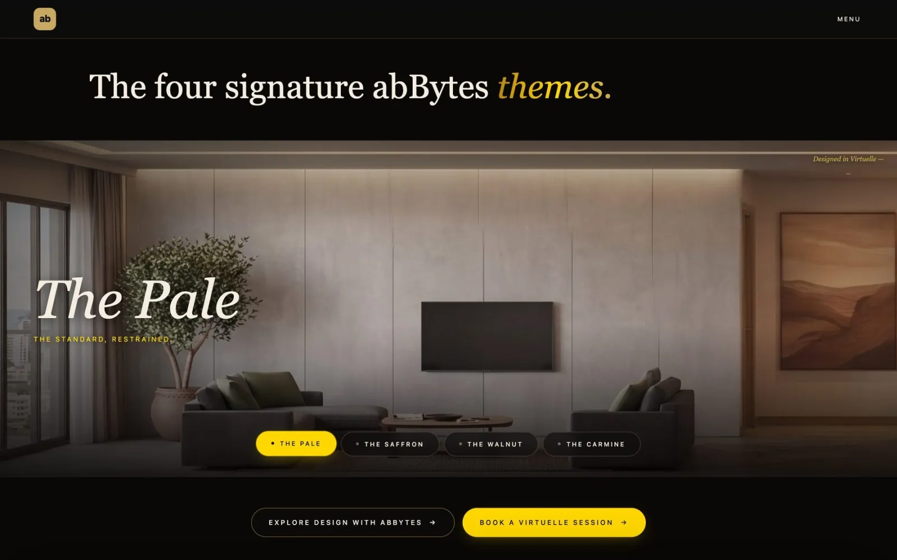
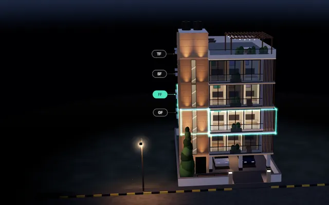

WorkCase study 06Website
Thirty pages with the finish of the homes
An editorial site for a South Delhi design-build studio: an animated 3D-floorplan hero, a portfolio filtered by type and a room you can re-dress in four palettes.
- Status
- Live, 30 pages (6 Nov 2026)
- Built with
- HTML, CSS design tokens, vanilla JavaScript, JSON data
- My part
- The brief, the content structure and the product calls; directing AI coding tools, testing every change, putting it live.
Screens from a Sep 2026 build, where “abBytes” stands in for the studio’s name.

The page wears the palettes
On the live site one room re-dresses in four palettes. Choose one and this case study wears it.
The room in The Pale, from the live site. The live site has all four.
One visitor, from the cutaway to the enquiry
The brief: dark, editorial and gold, closer to a magazine than a template; a page for every project, filterable by type; and a form that tells the studio what each visitor wants. One visitor’s path, over the site’s own screens.
-
Home
A home, cut open, before any sales copy
The site opens on an animated, scroll-driven cutaway of a furnished floor plan, with the studio’s line set in serif over it.
-
On a phone
The same cutaway, held upright
On a phone the plan fills the screen, and the line and the button sit under the thumb.
-
Projects
Seventeen pages, filtered by type
Construction, interior, commercial or for sale: one tap narrows the portfolio, and each chip carries its count.
-
A project
Every project opens its own page
Notes, specifications and related homes; most add a walkthrough video, a 3D isometric plan and an area schedule.
-
Interiors
Two services, two stories
Interiors and Construction & Collaboration each get a page. Interiors walks through moods, a cost configurator by tier and area, and material registers.
-
Pick a mood
One room, four palettes
Tap a theme and the same room re-dresses in place. The swatches at the top of this page do the same to this page.
-
Contact
“What brings you here?”
Five fields. The fourth sorts each enquiry into one of five kinds before anyone at the studio reads it.
The cutaway, moving
The live home page animates its cutaway as you scroll. The 3D Lab’s builder floor is its moving cousin here: a South Delhi builder floor you open floor by floor.
Open the live site
A 3D Lab chapter. It loads only if you start it.
What shipped: 30 pages, 17 projects, 5 kinds of enquiry
Counted on the live site. No visitor or sales figures are claimed.
Five kinds of enquiry, and where each one lands
The contact form and the links that open it · as built, Sep 2026
- The Interiors estimate, with tier and area; two articlesInteriorsEnquiry · Interiors
- Picked on the formBuilder FloorEnquiry · Builder Floor
- All 17 project pages; the home page’s plot sectionPlot CollaborationEnquiry · Plot Collaboration
- Picked on the formCommercial InteriorsEnquiry · Commercial Interiors
- The home page’s first button; the journalGeneral EnquiryEnquiry · General Enquiry
Each lands by email with its kind in the subject line and the page it came from. How many of each arrived is not counted yet.
All the numbers (6)
- 30pages on the live site: 8 standalone pages, 17 project pages and 5 articlescounted 6 Nov 2026
- 17project pages covering 14 projects, filterable by construction, interior, commercial or for saleOct 2026
- 5long-form articles, among them reading a builder floor, Italian marble in Delhi homes and plot collaborationOct 2026
- 5enquiry types the contact form tags: Interiors, Builder Floor, Plot Collaboration, Commercial Interiors and General EnquiryOct 2026
- 4palettes for the configurator room: The Pale, The Walnut, The Saffron and The CarmineSep 2026 build
- 11screens and 3 panels behind the 30 pages, built with AI coding tools under my directioncounted from the code · 6 Nov 2026
Counted on the live site; no visitor or sales figures are claimed. The screens are from a build captured in Sep 2026, in which “abBytes” (my GitHub handle, not a company) stands in for the studio’s name; the project page is from Oct 2026. Site content and photography belong to the studio. Also on the site: the studio’s four registers and the story from plot to keys on the home page; an Interiors page (pick a mood, see the design before it is built, the studio’s execution habits, a cost configurator by tier and area, material registers) and a Construction & Collaboration page for ground-up builds and plot collaboration. Projects and articles are JSON-driven, so a new one uses the same template and joins the filterable index; it is a static site with no framework or page builder, so changes are edits to its data files rather than a CMS. The enquiry routes above are read from the site’s code.
Try its public cousin
Atelier Nori is an interior studio’s site I built in the open, on the same idea: the site should feel like the studio’s rooms.
Atelier Nori: an interior design studio, Bengaluru
The same ideas, on a site anyone can open.
- Walls that change colour by room
- Rooms with their bills
- An enquiry that brings a brief
How it was built
I gathered the brief, shaped the content and made the product calls, directed AI coding tools, tested every change and put it live.
- HTML5
- CSS design tokens
- Vanilla JavaScript
- JSON-driven content
- IntersectionObserver
- Scroll-driven animation
A new project in three steps
There is no CMS: a project is a few lines in a data file. A scripted run with an invented project.
- Fill six fieldsName, locality, type, year, layout, plot size.
- The page appearsBuilt from the project template.
- The filter picks it upIt joins its type, and the counts move.